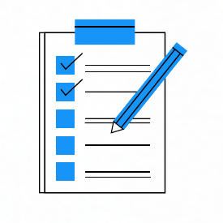
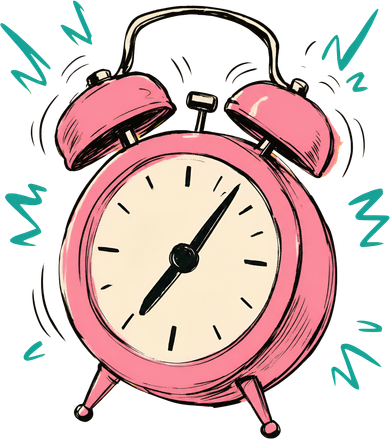

Más tiempo
para lo
importante
- Planificar la semana
- Revisar propuestas
- Preparar presentación
- Hacer ejercicio
- Leer
02 · Quién sufre el problema
Estudiantes que pierden sus rutinas.
Estudiantes universitarios, especialmente de Grado, tienen dificultades para mantener hábitos saludables y rutinas de estudio durante el curso.
Al acercarse los exámenes y las entregas, la carga académica, los cambios de horario y la falta de planificación, motivación y apoyo hacen que abandonen sus rutinas.
Estudio científico · 2024
Nieto-Fernández et al. (2024)
de los estudiantes retrasan tareas académicas
03 · Quién es el cliente
Guillermo, 20
Estudiante de Ingeniería
Intenta compaginar
- Estudios
- Gimnasio
- Vida personal
- Hobbies
Frustración principal
Empieza motivado, pero cuando llegan los exámenes abandona sus hobbies y hábitos.
04 · Cuándo sufre el usuario
Tres momentos clave
-
1
Varias entregas en una semana
-
2
Pospone las tareas para el último momento
-
3
No le da tiempo a completarlas todas


05 · Qué hacemos diferente
Directos al grano.
Otras apps
Se centran más en recopilar información del usuario que en ayudarle.
LUDO
Busca tu satisfacción y eficiencia ante todo.
06 · Cómo lo resolvemos
Regístrate, dale al cronómetro y a la obra.
LUDO busca tu eficiencia y comodidad.
-
01
Regístrate
-
02
Empieza el cronómetro
-
03
Manos a la obra
Más tiempo para lo importante.
07 · Vídeo conceptual